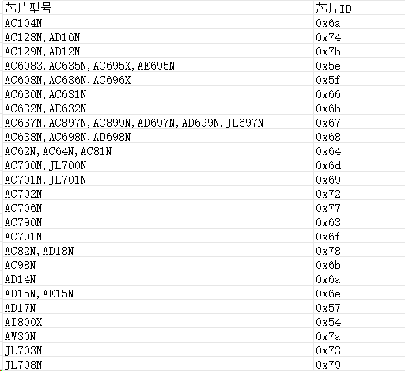
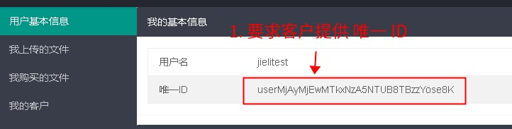
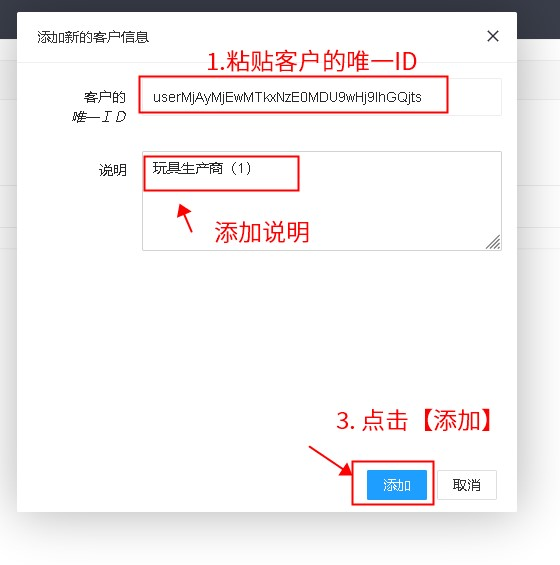
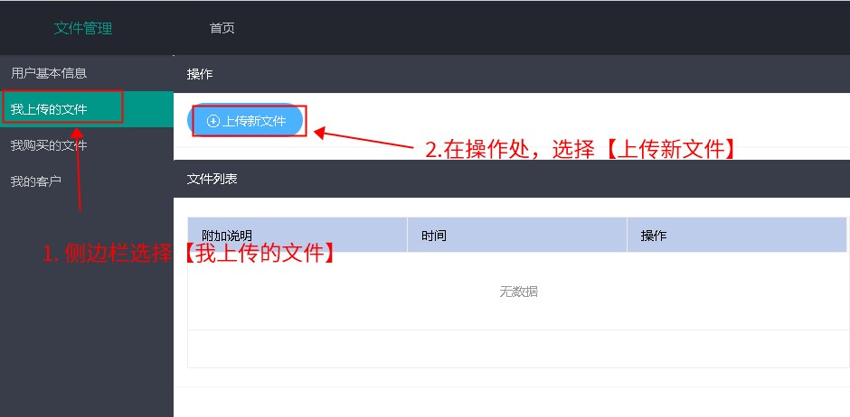
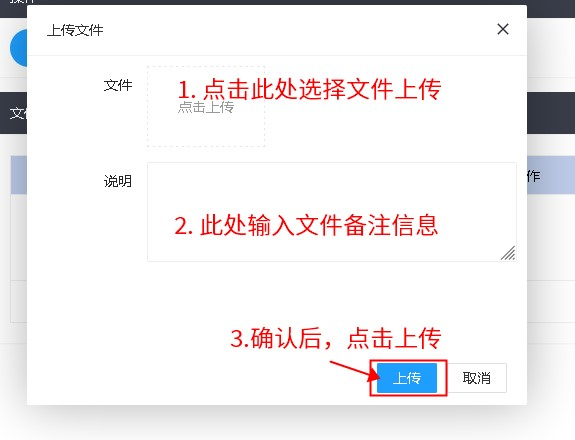
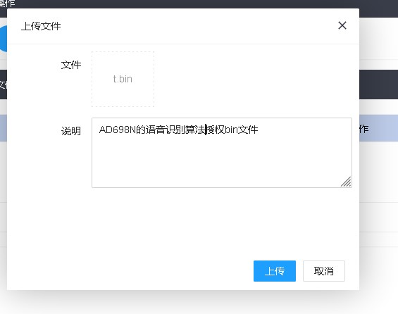
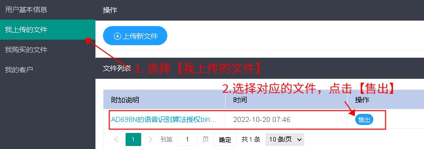
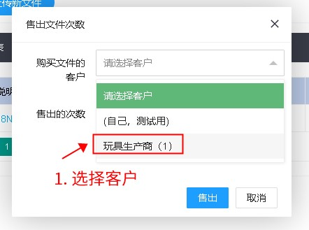
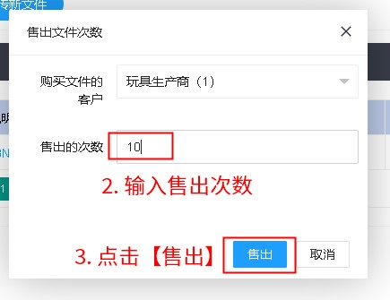

4.2. What Algorithm Providers Need to Do
4.2.1. Apply for an account
If you are sure that you need to sell authorizations for your algorithm through the Jieli multi-algorithm authorization server and you do not yet have a multi-algorithm authorization server account,
contact Zhuhai Jieli to apply for a multi-algorithm authorization server account, and help the users of your algorithm obtain multi-algorithm authorization server accounts.
For more information, see Using the Jieli Server
4.2.2. Obtain the Authroization_ID
Agree with the manufacturer on the storage ID of the authorization data (Authorization_ID), because within one SDK this ID is used to identify and distinguish the different algorithms.
Make sure that the ID agreed with the manufacturer is in the range 64 to 999.
Note
This Authorization_ID is the first parameter of the SDK API function sys_cfg_read_otp(Authorization_ID, enc_data, Authorization_Data_len); or syscfg_read_otp(Authorization_ID, enc_data, Authorization_Data_len);. It is also the Authorization_ID in set Authorization_ID=234 in r_makebin.bat of the project template below.
The Authorization_ID must be the same in all of these places. It specifies under which Authorization_ID the authorization data of the current algorithm provider is stored (each algorithm has its own Authorization_ID).
The purpose of this Authorization_ID is to distinguish the authorization data of different algorithms on the same chip.
4.2.3. Determine the size of the authorization data
The authorization data is the data that the algorithm company writes into the chip for authorization. Its size must be fixed and less than 256 bytes, and it cannot be changed once confirmed.
4.2.4. Generate the programming-time authorization executable
The programming-time authorization executable, i.e., the .authrun file, is a file that can run on the chip.
During programming, the programmer executes all .authrun files and writes the authorization information into the chip.
The algorithm company needs to add its authorization algorithm to the programming-time authorization executable project template (click here to download) (Generate_Authorization) provided by Jieli, and build it to generate the programming-time authorization executable (.authrun file).

Important
Note: when you modify the following two lines in r_makebin.bat, do not add any extra spaces (before or after the equals sign, or at the end of the line); bat scripts are sensitive to spaces.
set Authorization_ID=234
set CHIP_TYPE=AC695X
For the specific changes, see the instructions in the project template.
4.2.5. Add authorization data verification to the algorithm library (.a file)
The algorithm company adds an authorization data verification procedure to the corresponding algorithm library (.a file).
Note
Note that the .authrun file and the algorithm library (.a file) are two different things.
Only the .authrun file needs to be uploaded to the Jieli server.
The .a file must be sent to the customer only after the step below, which checks whether the authorization data is valid, has been added (by email or other means; it does not need to go through the Jieli server)
File |
Delivery method |
Purpose |
|---|---|---|
|
1. The algorithm company uploads it to the Jieli server |
1. Generates the authorization data and returns it to the programmer, which writes it into the chip. |
|
Does not need to go through the Jieli server |
1. Contains the algorithm that the algorithm company actually provides |
The Authorization_ID links the .a file and the .authrun file.
If you have the SDK but do not know how to get the corresponding project for generating the .a file, see How to Get a Library Project from an Existing Standard SDK Project
Note
Note that the sample code below corresponds to the sample encrypted data in the template project.
If the algorithm company changes how c_main in the template project generates the encrypted data (i.e., the authorization data), the authorization data verification procedure must be changed accordingly

extern u32 sys_cfg_read_otp(u32 id, u8 *buf, u32 len);
//or extern u32 syscfg_read_otp(u32 id, u8 *buf, u32 len);
extern u32 norflash_get_uuid(u8 *uuid);
//Because the algorithm can run on many chips, to restrict the chip models it runs on, you can add a chip model check to the algorithm library according to the figure above
//For example, to restrict the library to run only on the 695 series, add the following code:
if((JL_SYSTEM->CHIP_ID & 0xff00) == 0x5E00){
printf("run on 695x(BR23)");
}else{
while(1);
}
const u32 Authorization_ID = 128; // Change this to the ID of the current algorithm company
const u32 Authorization_Data_len = 17; // Change this to the length specified in the .authrun
u8 enc_data[32]; // Holds the output read by sys_cfg_read_otp; must be longer than (or equal to) Authorization_Data_len
// Read the authorization data of the current algorithm company from the chip
int r = sys_cfg_read_otp(Authorization_ID, enc_data /* output */, Authorization_Data_len);
//or int r = syscfg_read_otp(Authorization_ID, enc_data /* output */, Authorization_Data_len);
if(r!= Authorization_Data_len){
log_info("read error %d", r);
// If no valid authorization data can be read from the chip, exit so that the algorithm functions no longer work normally
return;
}
put_buf(enc_data, r); // Print the authorization data that was read (for debugging and observation)
//Verify whether the authorization data is valid
// The following is sample code; it must match the generation method in c_main of the .authrun file
for(int i = 0; i < r; i++)
{
// For how to get the uuid, see:
// Use norflash_get_uuid(&out_uuid); always 16 bytes
// printf_buf(out_uuid, 16);
// For details, ask whoever provided the SDK
u8 uuid[16];
u32 flash_id = norflash_get_uuid(&uuid);
if(enc_data[i] != (i^uuid[i%16])){
log_info("check error %d %x %x", i,enc_data[i],i^uuid[i%16]);
// Exit when the authorization data is invalid
// For example, make the algorithm functions stop working normally
return;
}
}
4.2.6. Add the manufacturer as a customer
Create your own account on the Jieli server (for how to use the server, see Using the Jieli Server); skip this step if you already have one
On the Jieli server, add the manufacturer under [My customers] (我的客户) (skip this step if it has already been added)
Note: what you add here is the unique ID of the manufacturer, not your own unique ID
If adding the unique ID fails, first check the letter case of the unique ID.
Some input method plug-ins may automatically convert certain letters to uppercase or lowercase.
To make checking and handling easier, copy the unique ID in both ways: screenshot + text copy.
That is, take a screenshot of the unique ID on the web page with screenshot software (or a plug-in), and also copy the unique ID via the system clipboard (right-click).



4.2.7. Upload the programming-time authorization executable
Under [My uploaded files] (我上传的文件), upload the authorization bin file (i.e., the .authrun file) to the Jieli server.




4.2.8. Sell the programming-time authorization executable
Under [My uploaded files] (我上传的文件), find the file to be sold and use [Sell] (售出) to sell a number of counts to the manufacturer.



Note: if you want the buyer of the file (the manufacturer in this example) to be able to resell the purchased counts to other users, check [Allow resale] (允许二次售卖) when selling, as shown below:

By default, resale is not allowed.
If resale is enabled for a purchased file, the buyer can find the file under [My purchased files] (我购买的文件) and select [Resell] (转售) to resell it.
Note
The manufacturer cannot obtain the original content of the
.authrunfile through the server. Algorithm providers must take care not to leak the.authrunfile to the manufacturer.Once uploaded, the same file can be sold multiple times. The results of multiple sales are cumulative.